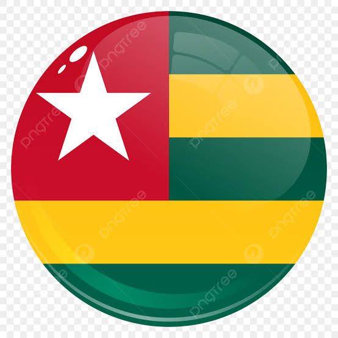

RÉPUBLIQUE DU TOGO — INFRASTRUCTURE ROUTIÈREPlateforme de visualisation géospatiale et d'analyse du réseau routier national
Explorez le réseau routier du Togo en quelques étapes simples
Naviguez sur la carte interactive avec le fond satellite ou OpenStreetMap pour visualiser le réseau routier togolais.
Utilisez les couches et la recherche pour filtrer les routes par catégorie, région ou préfecture.
Cliquez sur une route ou une région pour afficher toutes les données attributaires dans le panneau d'information.
Téléchargez les données en CSV ou exportez la carte en image PNG pour vos rapports et présentations.
Une plateforme complète pour l'analyse du réseau routier
Visualisez les données géospatiales sur une carte interactive avec plusieurs fonds de carte. Chaque couche peut être contrôlée indépendamment en opacité et en visibilité.
Accédez aux données détaillées de chaque entité géographique du réseau.
Exportez facilement les données et les cartes pour vos analyses hors ligne.
Centrale, Kara et Savanes — le nord du Togo
GeoROAD a été conçu pour cartographier et analyser le réseau routier des régions Centre, Kara et Savanes du Togo. Il offre des outils interactifs pour la visualisation, la recherche et l'export de données géospatiales, au service de l'aménagement du territoire et de l'amélioration de l'accès des populations rurales aux infrastructures routières.
Cette plateforme géomatique a été conçue et développée par Géraud F. AIDOFI & K. Idelphonse Olivier GNACADJA dans le cadre d'un projet de fin de formation en Géomatique Appliquée.
48 routes réparties en 5 catégories couvrant les régions Centre, Kara et Savanes du Togo
Les axes structurants du réseau, reliant les grandes villes et régions du nord Togo. Les routes nationales (RN) et régionales (RR) forment l'ossature principale de la desserte routière.
Le réseau secondaire et tertiaire, indispensable pour la desserte des populations rurales et l'accès aux services de base.
Accédez à la carte interactive et découvrez toutes les données du réseau routier des régions Centre, Kara et Savanes.
Ouvrir le Géoportail